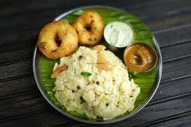

Pongal

Description
Pongal is a comforting South Indian dish made with rice, lentils, ghee, and spices. It’s often prepared during festivals like Pongal and is cherished for its rich, buttery flavor. This dish is easy to digest and perfect for a wholesome meal.
Ingredients
- 1 cup of rice
- 1/2 cup of moong dal (yellow lentils)
- 3 cups of water
- 2 tablespoons of ghee
- 1 teaspoon of black pepper
- 1 teaspoon of cumin seeds
- A few cashews
- Salt to taste
Steps
- Wash and roast the rice and lentils lightly.
- Cook them together in water until soft.
- Heat ghee, sauté cumin, pepper, and cashews, then mix into the cooked rice and lentils.
- Add salt and serve hot.